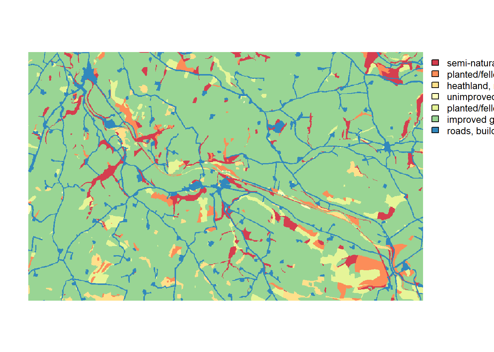
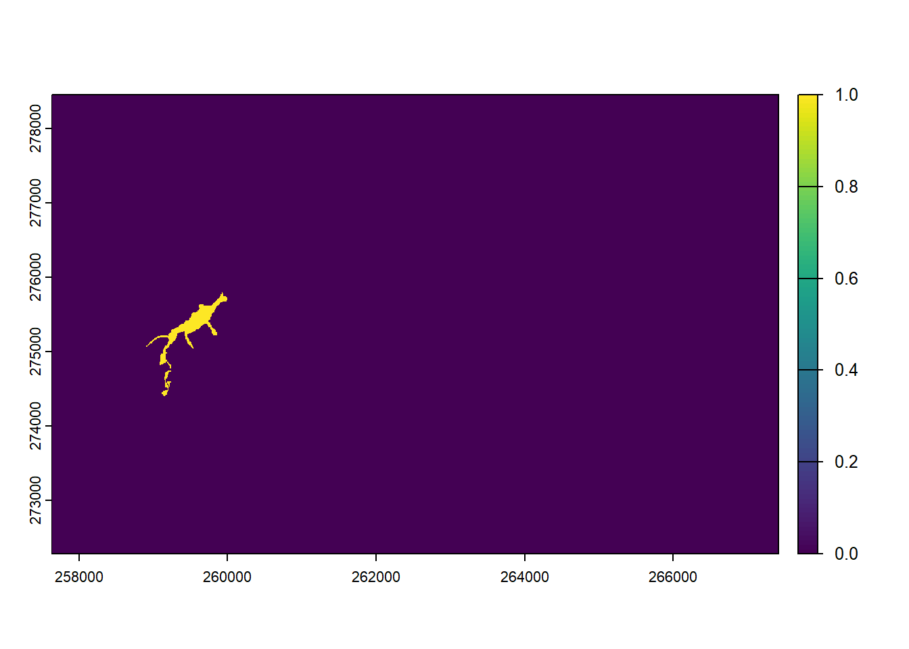
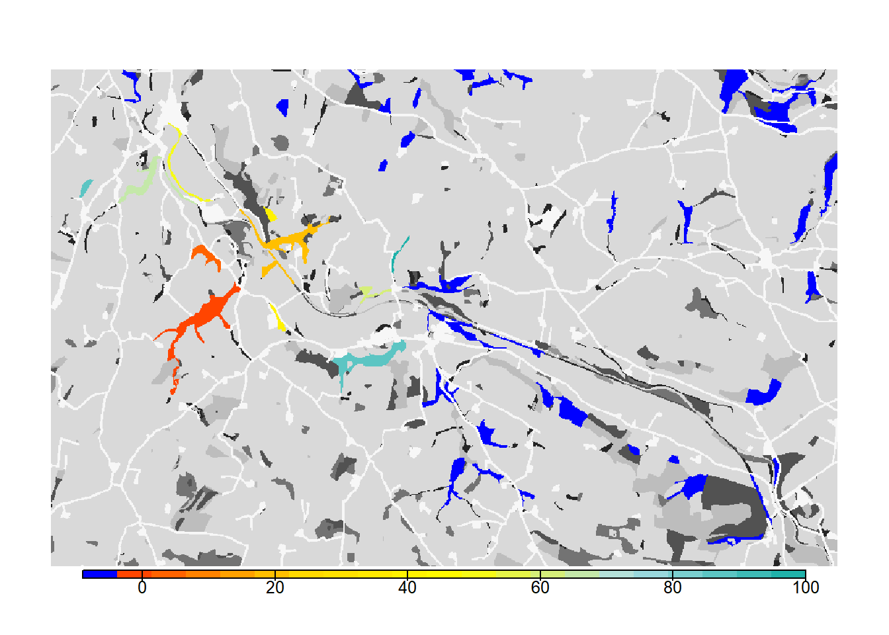
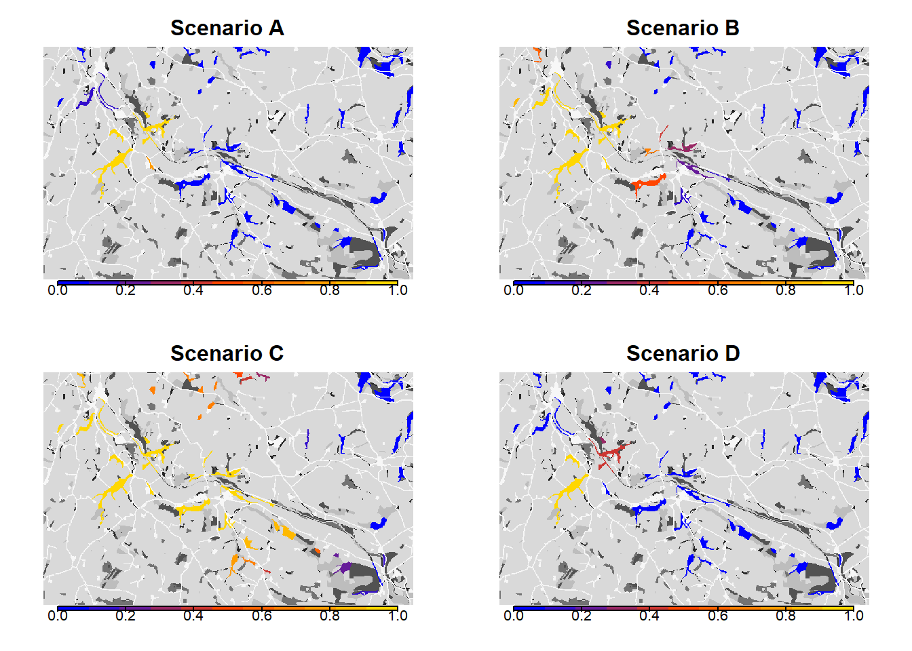

Tutorial 2: Landscape-scale connectivity, matrix permeability and dispersal behaviour
In this second example, RangeshiftR is used at the landscape scale to model functional connectivity of a woodland network for a hypothetical woodland species. The aims are:
- to illustrate how the platform can be used to investigate connectivity issues as well as species spatial dynamics at local and landscape scales;
- to show how the platform can be run as patch-based;
- to show how additional complexity in the population dynamics and dispersal behaviour can be incorporated;
- and to show how the connectivity analyses can be dependent upon the type of model and on the modelled dispersal behaviour.
We want to reproduce Figure 3 of Bocedi et al. (2014). To this end, we run four different scenarios:
- Explicit sexual model. Constant per-step mortality probability of 0.01; individuals settle only if at least one individual of the opposite sex is present in the patch (Figure 3b in the paper).
- As in (a), but with different settlement rules. Females settle in suitable patches, while males will settle only if at least one female is present in the patch (Figure 3c in the paper).
- Only-female model. Constant per-step mortality probability of 0.01; females settle in suitable patches (Figure 3d in the paper).
- As in (a), but with habitat-specific per-step mortality (Figure 3e in the paper).
Bocedi et al. (2014) defined the measures ‘final probability of occupancy’ and the ‘mean time to first colonisation’ to illustrate the connectivity between the initial patch and the rest of the woodland network. These measures allow rapidly assessing the effects of landscape characteristics and species movement abilities on connectivity and, importantly, also on the population dynamics. Note that both measures represent multi-generation connectivity.
1 Getting started
1.1 Create a RS directory
We need to set up the folder structure again with the three sub-folders named ‘Inputs’, ‘Outputs’ and ‘Output_Maps’.
library(RangeshiftR)
library(raster)
library(RColorBrewer)
library(rasterVis)
library(latticeExtra)
library(viridis)
library(grid)
library(gridExtra)
# relative path from working directory:
dirpath = "Tutorial_02/"
dir.create(paste0(dirpath,"Inputs"), showWarnings = TRUE)
dir.create(paste0(dirpath,"Outputs"), showWarnings = TRUE)
dir.create(paste0(dirpath,"Output_Maps"), showWarnings = TRUE)Copy the map files provided for exercise 2 into the ‘Inputs’ folder. The files are available from the original Bocedi et al. (2014) tutorials.
1.2 Landscape parameters
We use a typical British lowland, agricultural landscape having small fragments of woodland, as used by Forest Research, UK, in Watts et al. (2010). The landscape map has an extent of 10km by 6km and a resolution of 10m. Land-covers were aggregated into seven categories (Figure 3a in Bocedi et al. (2014)). Similar to tutorial 1, the map, landscape_10m_batch.txt, is a raster map with codes for different land-cover types. Land-covers were aggregated into seven categories which are, for simplicity, set as sequential integer numbers:
- 1 = semi-natural broad-leaved woodland
- 2 = planted/felled broad-leaved and mixed woodland, shrubs and bracken
- 3 = heathland, marshy grassland
- 4 = unimproved grassland, mire
- 5 = planted/felled coniferous woodland, semi-improved grassland, swamp
- 6 = improved grasslands, arable, water
- 7 = roads, buildings
landsc <- raster(paste0(dirpath, "Inputs/landscape_10m_batch.txt"))
# Plot land cover map and highlight cells with initial species distribution - option 2 with categorical legend:
landsc.f <- as.factor(landsc)
# add the land cover classes to the raster attribute table
rat <- levels(landsc.f)[[1]]
rat[["landcover"]] <- c("semi-natural broad-leaved woodland", "planted/felled broad-leaved and mixed woodland", "heathland, marshy grassland", "unimproved grassland", "planted/felled coniferous woodland", "improved grasslands, arable, water", "roads, buildings")
levels(landsc.f) <- rat
levelplot(landsc.f, margin=F, scales=list(draw=FALSE), col.regions=brewer.pal(n = 7, name = "Spectral"))
The second text file, woodland_1ha_patchIDs.txt, contains the patch-matrix landscape. It has the same extent and resolution as the land-type map, and each cell contains a unique patch ID that indicates to which patch it belongs. Patch number 0 designates the matrix patch, i.e. all unsuitable habitat.
patch <- raster(paste0(dirpath, "Inputs/woodland_1ha_patchIDs.txt"))
# We can have a glimpse at how many cells the different patches contain:
table(values(patch))##
## 0 1 2 3 4 5 6 7 8 9
## 585734 287 232 243 996 240 238 181 141 990
## 10 11 12 13 14 15 16 17 18 19
## 162 221 311 207 594 694 118 137 172 245
## 20 21 22 23 24 25 26 27 28 29
## 361 423 349 145 1141 138 401 280 336 706
## 30 31 32 33 34 35 36 37 38 39
## 1919 249 154 166 524 215 1277 383 735 113
## 40 41 42 43 44 45 46 47 48 49
## 1008 447 125 100 547 116 225 675 189 110
## 50
## 301# Plot the patches in different colours:
levelplot(patch, margin=F, scales=list(draw=FALSE), at=0:50, colorkey=F,
col.regions = c('black',rep(brewer.pal(n = 12, name = "Paired"),5))
) 
The last text file, patch30.txt, is a map that specifies the patches that contain the initial distribution of the species. In our case, this is only the patch with ID 30.
patch30 <- raster(paste0(dirpath, "Inputs/patch30.txt"))
# Look at initial patch:
plot(patch30)
We are ready to set up the landscape parameter object with these maps, their respective resolutions, and the carrying capacities for all land cover types. For the latter we choose to define only ‘semi-natural broad-leaved woodland’ (code 1) as suitable for our species.
land <- ImportedLandscape(LandscapeFile = "landscape_10m_batch.txt",
PatchFile = "woodland_1ha_patchIDs.txt",
Resolution = 10,
Nhabitats = 7,
K = c(10, rep(0,6)),
SpDistFile = "patch30.txt",
SpDistResolution = 10)2 Scenario a: sexual model with mate finding
2.1 Demographic and dispersal parameters
We will simulate a sexual species with simple, two-staged stage-structured population dynamics. The parameters are chosen to be representative of species having moderately high fecundity, high juvenile mortality and low adult mortality. This is encoded in the following transition matrix
## [,1] [,2] [,3]
## [1,] 0 0.0 5.0
## [2,] 1 0.1 0.0
## [3,] 0 0.4 0.8The first row and column describe the juvenile stage, the others the two adult stages. Juveniles will develop to the first adult stage at the end of their first year with a probability of 1.0, which allows for juvenile dispersal before any mortality happens.
In order to add a stage-structure to our population dynamics, we use the StageStructure() function within the demography module. The reproduction type 1 denotes a simple sexual model.
trans_mat <- matrix(c(0, 1, 0, 0, 0.1, 0.4, 5, 0, 0.8), nrow = 3, byrow = F)
demo <- Demography(ReproductionType = 1, # simple sexual model
StageStruct = StageStructure(Stages=3, # 1 juvenile + 2 adult stages
TransMatrix=trans_mat,
MaxAge=1000,
SurvSched=2,
FecDensDep=T))After reproduction, we allow only juveniles to disperse, and define a density-dependent emigration probability. To do so, we enable the options DensDep=T and StageDep=T, and in the matrix EmigProb we set the parameters D0 = 0.5, α = 10.0 and β = 1.0 for juveniles and to zero for all adult stages.
To account for functional connectivity, we use a mechanistic movement model which enables individuals to interact with the landscape and determine their path according to what they can perceive in the landscape. Therefore we will simulate movements with a stochastic movement simulator (SMS()) where individuals move stepwise (each step being one cell) and the direction chosen at each step is determined by the land cover costs (specified for each land type), the species’ perceptual range (PR) and directional persistence (DP). We set these parameters so that individuals have a perceptual range of 50m, use the arithmetic mean method (the default) for calculating effective cost (which tends to emphasize the avoidance of high-cost landscape features), and tend to follow highly correlated paths within the landscape. We also set a constant per-step mortality probability (StepMort).
Once arrived in a new patch, an individual can decide to settle or not based on certain settlement rules. Finding suitable habitat is a necessary condition in all cases. Additionally, we set mate availability as requirement, i.e. there has to be at least one individual of the opposite sex present in the patch to be considered suitable for settlement.
disp <- Dispersal(Emigration = Emigration(DensDep=T, StageDep=T,
EmigProb = cbind(0:2,c(0.5,0,0),c(10.0,0,0),c(1.0,0,0)) ),
Transfer = SMS(PR=5, DP=10, Costs = c(1,1,3,5,10,20,50), StepMort = 0.01),
Settlement = Settlement(FindMate = T) )We can visualise the defined processes by plotting some of the rates and probabilities that we have parameterised:
par(mfrow=c(1,2))
plotProbs(demo@StageStruct)
plotProbs(disp@Emigration)
2.2 Initialisation & simulation
We choose to initialise our simulation in all initial patches (specified in initial distribution map; in our case only patch number 30) at a density of 10 individuals per hectare, with an equal number of individuals in stages 1 and 2 at their respective minimum age.
# Population is initialised in Patch 30:
init <- Initialise(InitType = 1, # from loaded species distribution map
SpType = 0, # all suitable cells
InitDens = 2, # user-specified density
IndsHaCell = 10,
PropStages = c(0,0.5,0.5),
InitAge = 0)Alternatively, instead of providing a species distribution map for initialisation, we can also specify a list of intial patches (or cells, respectively) and their populations.
# Alternative initialisation in Patch 30:
init_alt <- Initialise(InitType = 2, # from initial individuals list file
InitIndsFile = "initial_inds.txt",
PropStages = c(0,0.5,0.5))## Warning: Initialise(): PropStages will be ignored since InitType = 2.We set the simulation time to 100 years and 20 replicates, and set the output types to write the files for population, occupancy and range data every year.
sim <- Simulation(Simulation = 0,
Replicates = 20,
Years = 100,
OutIntPop = 1,
OutIntOcc = 1,
OutIntRange = 1)As before, we need to stitch all modules together to a parameter master.
s <- RSsim(batchnum = 3, land = land, demog = demo, dispersal = disp, simul = sim, init = init)And run the simulation:
RunRS(s, dirpath)2.3 Analyse output
To analyse the simulation output, we first plot the meta-population results. Note here that - in contrast to the cell-based model from exercise 1 - the plotted occupancy refers to occupied patches rather than cells.
par(mfrow=c(1,2))
plotAbundance(s, dirpath)
plotOccupancy(s, dirpath)
In order to create occupancy maps, we first plot the landscape with the suitable patches in green and the initial patch in red. This color scheme was also used in Fig. 3a of Bocedi et al. (2014).
# We have initiated the population in the patch with ID=30. We highlight this in the map.
values(patch30)[values(patch30)<1] <- NA
values(patch)[values(patch)<1] <- NA
levelplot(landsc, margin=F, scales=list(draw=FALSE),at=seq(.5,7.5,by=1), colorkey=F,
col.regions = rev(brewer.pal(n = 7, name = "Greys") )) +
levelplot(patch, margin=F, scales=list(draw=FALSE), col.regions="green4") +
layer(sp.polygons(rasterToPolygons(patch30, dissolve=T), fill=NA, col='red',lwd=2))
# Store underlying landscape map display for later:
bg <- function(main=NULL){
levelplot(landsc, margin=F, scales=list(draw=FALSE),at=seq(.5,7.5,by=1), colorkey=F,
col.regions = rev(brewer.pal(n = 7, name = "Greys") ), main=main)
}To reproduce Fig. 3b of Bocedi et al. (2014), we map the mean occupancy probability for each patch after 100 years (left panel in the paper) as well as the mean time to colonisation (right panel), both calculated over the 20 replicates. We need to do a little data processing for this.
# read population results
pop_df <- readPop(s, dirpath)
pop_df <- pop_df[pop_df$PatchID!=0,]
# Occupancy probability after 100 years over all replicates
occ_prob <- sapply(sort(unique(pop_df$PatchID)), FUN=function(x,n=length(unique(pop_df$Rep))){ind <- sum(subset(pop_df,PatchID==x & Year==100)$NInd>0)/n; names(ind)=x;ind})
# Time to colonisation:
col_time <- data.frame(sapply(sort(unique(pop_df$PatchID)),FUN=function(p){sapply(sort(unique(pop_df$Rep)),FUN=function(r){ ifelse(nrow(subset(pop_df,PatchID==p & Rep==r & NInd>0)), min(subset(pop_df,PatchID==p & Rep==r & NInd>0)$Year), NA) })}))
names(col_time) <- sort(unique(pop_df$PatchID))
col_time_mean <- colMeans(col_time)
# Update patch information
patch_occ_prob <- patch_col_time <- patch
values(patch_occ_prob)[values(patch)>0] <- 0
values(patch_col_time)[values(patch)>0] <- -9
for (i in as.numeric(names(occ_prob))){
values(patch_occ_prob)[values(patch)==i] <- occ_prob[paste(i)]
}
for (i in as.numeric(names(col_time_mean))){
values(patch_col_time)[values(patch)==i] <- ifelse(is.na(col_time_mean[paste(i)]),-9,col_time_mean[paste(i)])
}
# map occupancy probability
mycol_occprob <- colorRampPalette(c('blue','orangered','gold'))
levelplot(patch_occ_prob, margin=F, scales=list(draw=FALSE), at=seq(0,1,length=11), col.regions=mycol_occprob(11))# map occupancy probability on landscape background. For this, we first define a colorkey function
col.key <- function(mycol, at, space='bottom',pos=0.05, height=0.6, width=1) {
key <- draw.colorkey(
list(space=space, at=at, height=height, width=width,
col=mycol)
)
key$framevp$y <- unit(pos, "npc")
return(key)
}
bg() + levelplot(patch_occ_prob, margin=F, scales=list(draw=FALSE), at=seq(0,1,length=11), col.regions=mycol_occprob(11))
grid.draw(col.key(mycol_occprob(11),at=seq(0,1,length=11)))# map colonisation time
mycol_coltime <- colorRampPalette(c('orangered','gold','yellow','PowderBlue','LightSeaGreen'))
levelplot(patch_col_time, margin=F, scales=list(draw=FALSE), at=c(-9,seq(-.001,max(pop_df$Year),length=11)), col.regions=c('blue',mycol_coltime(11)))
# map colonisation time on landscape background
bg() + levelplot(patch_col_time, margin=F, scales=list(draw=FALSE), at=c(-9,seq(-.001,max(pop_df$Year),length=11)), col.regions=c('blue',mycol_coltime(11)))
grid.draw(col.key(c('blue',mycol_coltime(11)), c(-9,seq(-.001,max(pop_df$Year),length=11))))
For convenience, let’s put all the population data processing into a function get_patch_results() for later usage.
# Put all of this into a function
get_patch_results <- function(pop_df,patch_r){
# This function takes the patch-based population file and the patch raster map and produces summary stats and maps on occupancy probability and mean time to colonisation
# Occupancy probability after 100 years over all replicates
occ_prob <- sapply(sort(unique(pop_df$PatchID)), FUN=function(x,n=length(unique(pop_df$Rep))){ind <- sum(subset(pop_df,PatchID==x & Year==100)$NInd>0)/n; names(ind)=x;ind})
# Time to colonisation:
col_time <- data.frame(sapply(sort(unique(pop_df$PatchID)),FUN=function(p){sapply(sort(unique(pop_df$Rep)),FUN=function(r){ ifelse(nrow(subset(pop_df,PatchID==p & Rep==r & NInd>0)), min(subset(pop_df,PatchID==p & Rep==r & NInd>0)$Year), NA) })}))
names(col_time) <- sort(unique(pop_df$PatchID))
col_time_mean <- colMeans(col_time)
patch_occ_prob <- patch_col_time <- patch
values(patch_occ_prob)[values(patch)>0] <- 0
values(patch_col_time)[values(patch)>0] <- -9
for (i in as.numeric(names(occ_prob))){
values(patch_occ_prob)[values(patch)==i] <- occ_prob[paste(i)]
}
for (i in as.numeric(names(col_time_mean))){
values(patch_col_time)[values(patch)==i] <- ifelse(is.na(col_time_mean[paste(i)]),-9,col_time_mean[paste(i)])
}
values(patch_occ_prob)[values(patch)<1] <- values(patch_col_time)[values(patch)<1] <- NA
return(list(occ_prob=occ_prob, col_time=col_time, col_time_mean=col_time_mean, patch_occ_prob=patch_occ_prob, patch_col_time=patch_col_time))
}
summary_pop_a <- get_patch_results(pop_df,patch)3 Scenario b: females settle independent of males
This experiment was designed to provide an example of how the dispersal behaviour of the species and the specification of settlement rules can change the estimated connectivity of a habitat network. We will relax the mating requirement a little by making it sex-dependent and only setting it for males. This means that female dispersers will settle in suitable patches regardless of males, while males settle only when finding a female.
# Change Settlement rules
disp_b <- Dispersal(Emigration = Emigration(DensDep=T, StageDep=T,
EmigProb = cbind(0:2,c(0.5,0,0),c(10.0,0,0),c(1.0,0,0)) ),
Transfer = SMS(PR=5, DP=10, Costs = c(1,1,3,5,10,20,50), StepMort = 0.01),
Settlement = Settlement(FindMate = c(F,T), SexDep=T, Settle=cbind(c(0,1)) ) )
# Update simulation
sim_b <- Simulation(Simulation = 1,
Replicates = 20,
Years = 100,
OutIntPop = 1,
OutIntOcc = 1,
OutIntRange = 1)
# Update parameter master
s_b <- s + disp_b + sim_b# run simulation
RunRS(s_b, dirpath)Now, let’s post-process the simulation results and plot the maps.
# Read in population results
pop_df_b <- readPop(s_b, dirpath)
# Process the results to get occupancy probabilities and colonisation times
summary_pop_b <- get_patch_results(pop_df_b,patch)
# Map occupancy probabilities:
bg() + levelplot(summary_pop_b$patch_occ_prob, margin=F, scales=list(draw=FALSE), at=seq(0,1,length=11), col.regions=mycol_occprob(11))
grid.draw(col.key(mycol_occprob(11),at=seq(0,1,length=11)))
# map colonisation time + background
bg() + levelplot(summary_pop_b$patch_col_time, margin=F, scales=list(draw=FALSE), at=c(-9,seq(-.001,max(pop_df$Year),length=11)), col.regions=c('blue',mycol_coltime(11)))
grid.draw(col.key(c('blue',mycol_coltime(11)), c(-9,seq(-.001,max(pop_df$Year),length=11))))
From both the visualisation and the results, we see that relaxing the mate-finding rules substantially increased the number of occupied patches, their probability of occupancy and the mean time to colonization. This results in higher functional connectivity of the woodland network over 100 years.
4 Scenario c: asexual / female-only model
Here we change the demography module to a female-only model. This change also has important consequences for the dispersal process and potential implications for patterns of colonization across a landscape. Female-only models assume that males are not limiting, and that the population dynamics are driven only by females. It also means that sexes are not modelled explicitly and it is not possible to account for behaviours like mate-finding in the settlement decisions; females will settle in suitable habitat patches and then will automatically be able to attempt reproduction.
The stage-structure of the model remains the same apart from accounting for the female-only case. In particular, in female-only models, we ignore the male part of the population and offspring. Therefore, we set the fecundity of stage 3 to 2.5 instead of 5.0 and the carrying capacity K (1/b) to 5 instead of 10. Sex-dependent settlement options are no longer available.
# Change carrying capacitiy to half its value of the sexual model
land_c <- ImportedLandscape(LandscapeFile = "landscape_10m_batch.txt",
PatchFile = "woodland_1ha_patchIDs.txt",
Resolution = 10,
Nhabitats = 7,
K = c(5, rep(0,6)),
SpDistFile = "patch30.txt",
SpDistResolution = 10)
# Change demography settings
demo_c <- Demography(ReproductionType = 0, # female-only model
StageStruct = StageStructure(Stages=3,
TransMatrix=matrix(c(0, 1, 0, 0, 0.1, 0.4, 2.5, 0, 0.8), nrow = 3, byrow = F),
MaxAge=1000,
SurvSched=2,
FecDensDep=T))
# Remove settlement rules
disp_c <- Dispersal(Emigration = Emigration(DensDep=T, StageDep=T,
EmigProb = cbind(0:2,c(0.5,0,0),c(10.0,0,0),c(1.0,0,0)) ),
Transfer = SMS(PR=5, DP=10, Costs = c(1,1,3,5,10,20,50), StepMort = 0.01),
Settlement = Settlement()
)
# Update simulation
sim_c <- Simulation(Simulation = 2,
Replicates = 20,
Years = 100,
OutIntPop = 1,
OutIntOcc = 1,
OutIntRange = 1)
# parameter master
s_c <- RSsim(batchnum = 3, land = land_c, demog = demo_c, dispersal = disp_c, simul = sim_c, init = init)RunRS(s_c, dirpath)Process the output and plot the occupancy maps:
# Read population results
pop_df_c <- readPop(s_c, dirpath)
summary_pop_c <- get_patch_results(pop_df_c,patch)
# Map occupancy probabilities:
bg() + levelplot(summary_pop_c$patch_occ_prob, margin=F, scales=list(draw=FALSE), at=seq(0,1,length=11), col.regions=mycol_occprob(11))
grid.draw(col.key(mycol_occprob(11),at=seq(0,1,length=11)))
# Map colonisation time + background
bg() + levelplot(summary_pop_c$patch_col_time, margin=F, scales=list(draw=FALSE), at=c(-9,seq(-.001,max(pop_df$Year),length=11)), col.regions=c('blue',mycol_coltime(11)))
grid.draw(col.key(c('blue',mycol_coltime(11)), c(-9,seq(-.001,max(pop_df$Year),length=11))))
As we see from the results, the asexual model without mate finding as settlement rule leads to a drastic increase in the overall occupancy of the habitat network after 100 years.
5 Scenario d: habitat-specific per-step mortality
In this last simulation, we will demonstrate how RangeshiftR can incorporate more complexity in the way that movement is modelled. We relax the unrealistic assumption that the per-step mortality is constant across all land-cover types, and assign different mortality values to each habitat. To set up this simulation, we use the parameters from scenario a) and only add a modified transfer module. Here, we define StepMort as habitat-dependent by providing a vector with mortality probabilities for each land cover type.
# Update Transfer sub-module within the dispersal module
disp_d <- disp + SMS(PR=5, DP=10, Costs = c(1,1,3,5,10,20,50),
StepMort = c(0,0,0,0.01,0.01,0.02,0.05)
)
# Update simulation
sim_d <- Simulation(Simulation = 3,
Replicates = 20,
Years = 100,
OutIntPop = 1,
OutIntOcc = 1,
OutIntRange = 1)
# Use parameter master from a) and add new transfer module
s_d <- s + disp_d + sim_dRun the simulation:
RunRS(s_d, dirpath)Process and map results:
# Read population results
pop_df_d <- readPop(s_d, dirpath)
summary_pop_d <- get_patch_results(pop_df_d,patch)
# Map occupancy probabilities:
bg() + levelplot(summary_pop_d$patch_occ_prob, margin=F, scales=list(draw=FALSE), at=seq(0,1,length=11), col.regions=mycol_occprob(11))
grid.draw(col.key(mycol_occprob(11),at=seq(0,1,length=11)))
# map colonisation time + background
bg() + levelplot(summary_pop_d$patch_col_time, margin=F, scales=list(draw=FALSE), at=c(-9,seq(-.001,max(pop_df$Year),length=11)), col.regions=c('blue',mycol_coltime(11)))
grid.draw(col.key(c('blue',mycol_coltime(11)), c(-9,seq(-.001,max(pop_df$Year),length=11))))
We see that such small changes in the per-step mortality, in interaction with the landscape structure, make a big difference in the results, in this case decreasing the functional connectivity of the network.
6 Scenario comparison
Let’s plot all maps next to each other.
# Plot occupancy probabilities for all scenarios
occ_a <- bg(main="Scenario A") + levelplot(summary_pop_a$patch_occ_prob, margin=F, scales=list(draw=FALSE), at=seq(0,1,length=11), col.regions=mycol_occprob(11))
occ_b <- bg(main="Scenario B") + levelplot(summary_pop_b$patch_occ_prob, margin=F, scales=list(draw=FALSE), at=seq(0,1,length=11), col.regions=mycol_occprob(11))
occ_c <- bg(main="Scenario C") + levelplot(summary_pop_c$patch_occ_prob, margin=F, scales=list(draw=FALSE), at=seq(0,1,length=11), col.regions=mycol_occprob(11))
occ_d <- bg(main="Scenario D") + levelplot(summary_pop_d$patch_occ_prob, margin=F, scales=list(draw=FALSE), at=seq(0,1,length=11), col.regions=mycol_occprob(11))
grid.arrange(occ_a,occ_b,occ_c,occ_d, ncol=2)
grid.draw(col.key(mycol_occprob(11),at=seq(0,1,length=11), space='right',pos=0.5))
# Plot colonisation times for all scenarios
# colonisation times
col_a <- bg(main="Scenario A") + levelplot(summary_pop_a$patch_col_time, margin=F, scales=list(draw=FALSE), at=c(-9,seq(-.001,max(pop_df$Year),length=11)), col.regions=c('blue',mycol_coltime(11)))
col_b <- bg(main="Scenario B") + levelplot(summary_pop_b$patch_col_time, margin=F, scales=list(draw=FALSE), at=c(-9,seq(-.001,max(pop_df$Year),length=11)), col.regions=c('blue',mycol_coltime(11)))
col_c <- bg(main="Scenario C") + levelplot(summary_pop_c$patch_col_time, margin=F, scales=list(draw=FALSE), at=c(-9,seq(-.001,max(pop_df$Year),length=11)), col.regions=c('blue',mycol_coltime(11)))
col_d <- bg(main="Scenario D") + levelplot(summary_pop_d$patch_col_time, margin=F, scales=list(draw=FALSE), at=c(-9,seq(-.001,max(pop_df$Year),length=11)), col.regions=c('blue',mycol_coltime(11)))
grid.arrange(col_a,col_b,col_c,col_d, ncol=2)
grid.draw(col.key(c('blue',mycol_coltime(11)), c(-9,seq(-.001,max(pop_df$Year),length=11)), space='right',pos=0.5))
References
Bocedi, G., S.C.F. Palmer, G. Pe’er, R.K. Heikkinen, Y.G. Matsinos, K. Watts, and J.M.J. Travis. 2014. “RangeShifter: A Platform for Modelling Spatial Eco-Evolutionary Dynamics and Species’ Responses to Environmental Changes.” Methods in Ecology and Evolution 5 (4): 388–96. https://doi.org/10.1111/2041-210X.12162.